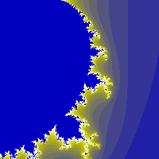

Fractal Explorer
Rendering of multiple different fractal systems, with configurable coloring options.
Fractal type
Type of a fractal
name: fractaltype
type: enum
Iterations
name: iter
type: int
default: 50
minimum: 1
maximum: 1000
ui-minimum: 1
ui-maximum: 1000
ui-gamma: 1.00
ui-step-small: 1
ui-step-big: 100
Zoom
Zoom in the fractal space
name: zoom
type: double
default: 300.00
minimum: 0.00
maximum: 10000000.00
ui-minimum: 0.00
ui-maximum: 10000.00
ui-gamma: 1.50
ui-step-small: 0.10
ui-step-big: 1.00
ui-digits: 1
Shift X
X shift in the fractal space
name: shiftx
type: double
default: 0.00
minimum: -inf
maximum: +inf
ui-minimum: -1000.00
ui-maximum: 1000.00
ui-gamma: 1.00
ui-step-small: 1.00
ui-step-big: 100.00
ui-digits: 1
Shift Y
Y shift in the fractal space
name: shifty
type: double
default: 0.00
minimum: -inf
maximum: +inf
ui-minimum: -1000.00
ui-maximum: 1000.00
ui-gamma: 1.00
ui-step-small: 1.00
ui-step-big: 100.00
ui-digits: 1
CX
CX (No effect in Mandelbrot and Sierpinski)
name: cx
type: double
default: -0.75
minimum: -2.50
maximum: 2.50
ui-minimum: -2.50
ui-maximum: 2.50
ui-gamma: 1.00
ui-step-small: 0.00
ui-step-big: 0.10
ui-digits: 3
visible:! fractaltype {mandelbrot, sierpinski}
description:''
CY
CY (No effect in Mandelbrot and Sierpinski)
name: cy
type: double
default: -0.20
minimum: -2.50
maximum: 2.50
ui-minimum: -2.50
ui-maximum: 2.50
ui-gamma: 1.00
ui-step-small: 0.00
ui-step-big: 0.10
ui-digits: 3
visible:$cx.visible
description:''
Red stretching factor
name: redstretch
type: double
default: 1.00
minimum: 0.00
maximum: 1.00
ui-minimum: 0.00
ui-maximum: 1.00
ui-gamma: 1.00
ui-step-small: 0.00
ui-step-big: 0.10
ui-digits: 3
Green stretching factor
name: greenstretch
type: double
default: 1.00
minimum: 0.00
maximum: 1.00
ui-minimum: 0.00
ui-maximum: 1.00
ui-gamma: 1.00
ui-step-small: 0.00
ui-step-big: 0.10
ui-digits: 3
Blue stretching factor
name: bluestretch
type: double
default: 1.00
minimum: 0.00
maximum: 1.00
ui-minimum: 0.00
ui-maximum: 1.00
ui-gamma: 1.00
ui-step-small: 0.00
ui-step-big: 0.10
ui-digits: 3
Red application mode
name: redmode
type: enum
Green application mode
name: greenmode
type: enum
Blue application mode
name: bluemode
type: enum
Red inversion
name: redinvert
type: boolean
default: False
Green inversion
name: greeninvert
type: boolean
default: False
Blue inversion
name: blueinvert
type: boolean
default: False
Number of colors
name: ncolors
type: int
default: 256
minimum: 2
maximum: 8192
ui-minimum: 2
ui-maximum: 8192
ui-gamma: 1.00
ui-step-small: 1
ui-step-big: 5
Loglog smoothing
name: useloglog
type: boolean
default: False
pads: output
parent-class: GeglOperationPointRender
categories: render fractal
source: operations/common-gpl3+/fractal-explorer.c
position-dependent: true
license: GPL3+
 This page is part of the online GEGL Documentation, GEGL is a data flow based image processing library/framework, made to fuel GIMPs high-bit depth non-destructive editing future.
This page is part of the online GEGL Documentation, GEGL is a data flow based image processing library/framework, made to fuel GIMPs high-bit depth non-destructive editing future.